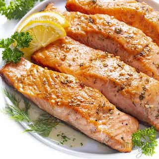

Salmon

description
Salmon is a mild-flavored fish with a rich and slightly oily taste to it. Baked, grilled, and poached salmon will often taste citrusy and buttery, along with whatever accompanying flavors were added to the dish. Smoked salmon tastes smokey and subtly fishy, and canned salmon is often either bland or oily.
Ingredients
- Salmon fillets
- Olive oil
- Salt
- Cracked black pepper
- Minced garlic
- Italian herb seasoning blend
- Lemon
Steps
- Preheat the oven to 400 degrees and grease a large baking pan. Arrange the salmon fillets on the baking sheet and season generously with salt and pepper.
- Stir together the olive oil, garlic, herbs, and juice of 1/2 of the lemon. Spoon this sauce over salmon fillets, being sure to rub all over the tops and sides of the salmon so it has no dry spots. Thinly slice the remaining 1/2 of the lemon and top each piece of salmon with a slice of lemon.
- Bake the salmon in the oven for 15-18 minutes or until the salmon is opaque and flaky when pulled apart with a fork. You can broil the last 1-2 minutes if desired.
- Garnish with fresh thyme or parsley if desired and serve.